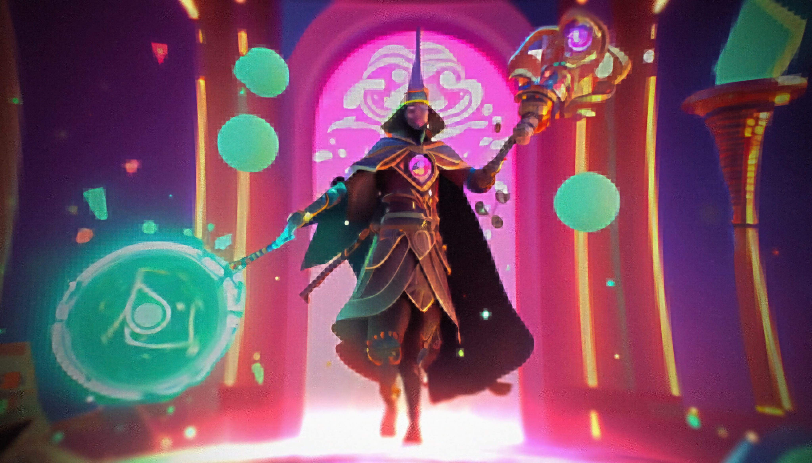
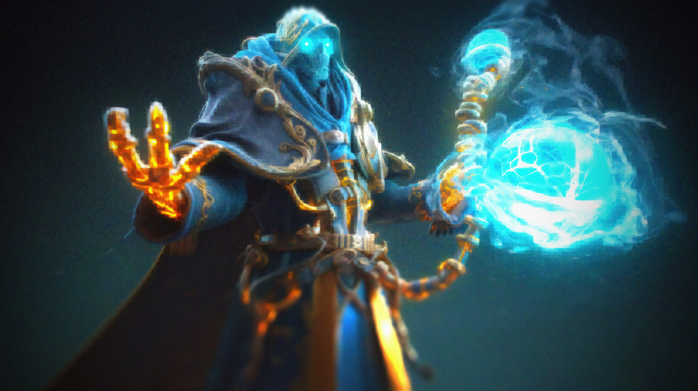

Media




The Legends of Arkan is a thrilling adventure that combines the power of magic and technology to create a world full of danger, intrigue, and challenges.
In a world where magic and machines are intertwined, there are great legends of beings who wield the power of both. The Arcane Automaton, Arcane Ninja, Arcane Titan, and Gearhead Wizard are just a few of these powerful beings. But they are not alone in their quests, as there are also Chronomancers, Mystic Machinists, and even Steam Firemancers who have mastered the art of magic and technology. Together, these legends navigate a realm full of danger and intrigue, facing challenges from the mysterious Dark Parallel Dimension to the retrofuturistic world of the Steam Firemancer. With all their skills and abilities, will they be able to protect their realm from destruction? Find out in The Legends of Arcane Realms.
Thank you for joining us on this thrilling adventure through the Legends of Arcane Realms.
Step into Arkan, a realm full of magic and danger, where legends of powerful beings wielding the art of magic and technology navigate through danger and intrigue.
The Legends of Arkan Realms is a thrilling adventure story that combines the power of magic and technology to create a world full of danger, intrigue, and challenges. Join these powerful beings on their quest to protect their realm from destruction. Introduction: Welcome to the world of Arkan Realms, where the magic of the arcane meets the power of machines. In this realm, legends of powerful beings have emerged, each wielding the power of both magic and technology to face the challenges that threaten their world.